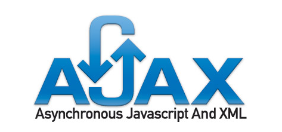
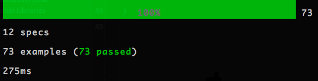
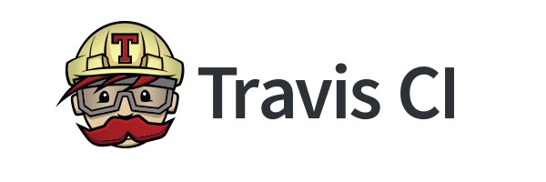

Presentacio Manuel Blanch Garzon
Pagina inicial presentació
Index
Pagines incloses
- Composer
- Empaquetament
- Git
- HTTP, Rest, Ajax
- Empaquetament amb Javascript
- Semantic Versioning
- Test Development Driven
- Continuous Integrations
- Github Pages
- Api Docs Generators
- PHP Debug amb Xdebug i Code Coverag
Que es composer
Composer és un gestor de dependències, no un gestor de paquets.
Tracta amb paquets i llibreries, la instal·lació sempre és local per a qualsevol projecte, les llibreries s'instal·len en un directori per defecte (normalment és / vendor).
Composer és capaç d'instal·lar les llibreries que requereix el teu projecte amb les versions que necessitin. Es capaç de descarregar tot el necessari perquè funcioni de forma manual.
Exemple Codi

Que es empaquetar
L'empaquetat d'aplicacions consisteix a proporcionar les aplicacions en forma de paquets, als quals se sol anomenar en anglès programari bundle o application bundle.
Aquests paquets estan formats pels programes executables de l'aplicació, així com per totes les biblioteques de les quals depèn i altres tipus de fitxers (imatges, fitxers d'àudio, traduccions i localitzacions, etc.),
de manera que es proporcionen com un conjunt.
Exemple empaquetat

Que es github
GitHub és una plataforma de desenvolupament col·laboratiu de programari per allotjar projectes utilitzant el sistema de control de versions Git.
El codi s'emmagatzema de forma pública, encara que també es pot fer de forma privada, creant un compte de pagament.

Que es AJAX
AJAX, acrònim de Asynchronous JavaScript And XML (JavaScript asíncron i XML), és una tècnica de desenvolupament web per crear aplicacions interactives o RIA (Rich Internet Applications).
Aquestes aplicacions s'executen en el client, és a dir, en el navegador dels usuaris mentre es manté la comunicació asíncrona amb el servidor en segon pla.
D'aquesta forma és possible realitzar canvis sobre les pàgines sense necessitat de recarregar-les, millorant la interactivitat, velocitat i usabilitat en les aplicacions.

Que es empaquetament amb javascript
NPM (node package manager) és un gestor de paquets de NODE.JS, que ens permet descarregar llibreries i enllaçar-les o descarregar programes de JS
Codi Js


Que es Semantic Versioning
En el món de la gestió de programari ha un lloc terrible anomenat "dependència infern."
Com més gran sigui el sistema ell creix i ademes els paquets a integrar en el seu programari, tenen més probabilitats de trobar-se a si mateix, un dia.
En els sistemes amb moltes dependències, l'alliberament de noves versions dels paquets es pot convertir ràpidament en un malson.
Si les especificacions de dependència estan molt estrets, està en perill de bloqueig versió (la incapacitat per actualitzar un paquet sense haver de alliberar noves versions de cada paquet dependent).
Dependència es troba quan el bloqueig de la versió i / o la versió de la promiscuïtat li impedeixen moure amb facilitat i seguretat del seu projecte endavant.

Que es Test Development driven
Test Development Driven: Desenvolupament guiat per proves de programari, és una pràctica d'enginyeria de programari que involucra altres dues pràctiques: Escriure les proves primer (Test First Development) i Refactorització (Refactoring).
Per escriure les proves generalment s'utilitzen les proves unitàries. En primer lloc, s'escriu una prova i es verifica que les proves fallen.
Resultat test satisfactori


Que es Continuous integrations
La integració continua (CI) es una forma de treballar en informàtica on indica que es fan integracions continuament.
Concepte de Martin Fowler, es un dels importants. Realitza moltissima documentació.
Cada cert temps ens hauriem de descarregar el codi, compilar-lo, realitzar testos i treure un informe que ens digue com anem. Valors quantitatius.
Integració vol dir el proces tipic de descarrega, execució, compilació i informe final.
Integracio amb travis


Que es GithubPages
GitHub Pages és una forma d'allotjar els nostres projectes en una pàgina web, sense necessitat de tenir coneixements en servidors.

Que es ApiDocsGenerator
Es un clon del Java docs, son el mateix per al php, ve del java i es tracta de una forma estandar de documentar el nostre codi.
Exemple ApiDocs


Que es Xdebug
És una extensió de PHP per fer debug amb eines de depuració tradicionals, des de l'editor, tal com es fa en llenguatges de programació clàssics.
Podem trobar aquesta extensió al seu lloc web: http://xdebug.org/.
XDebug et permetrà no només analitzar el contingut de les variables, sinó també fer el seguiment del flux d'execució, per saber què és el que realment està passant quan alguna cosa no funciona com s'esperava.
Exemple Xdebug